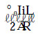
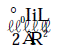
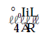
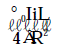
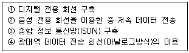
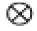

와전류비파괴검사기사(구) (2005-05-29 기출문제)
1과목: 와전류탐상시험원리
1. 와전류탐상시험의 기본 원리는?
- 자외선 현상
- 전자기 유도 현상
- 압전에너지 변환 현상
- 자기 기계적 현상
(정답률: 알수없음)

2. 다음 중 와전류탐상시험을 이용하여 막두께 측정을 할 때 가장 관련되는 사항은?
- 말단 효과(End effect)
- 도체와 코일간의 거리 효과
- 표피 효과(Skin effect)
- 도체와 코일간의 충진 효과
(정답률: 알수없음)
3. 와류탐상시험에서 불연속성 때문에 지시값들을 유지하는 동안 서서히 측정치수를 변화시켜 지시값에 영향주는 요소를 최소화하려고 한다. 다음 중 올바른 방법은?
- 와류시험 설비에 고역필터(high-pass filter)를 포함시킨다.
- 와류시험 설비에 저역필터(low-pass filter)를 포함시킨다.
- 증폭기의 대역폭을 증가시킨다.
- 임피던스 방식(impedance method)을 사용한다.
(정답률: 알수없음)
4. 와류탐상검사에서 다중주파수 기법을 활용하는 목적은?
- 신호대 잡음비의 감소를 위해
- 동시에 1개이상의 튜브를 검사하기 위해
- 주파수 혼합에 의한 불필요한 신호를 제거하기 위해
- 검사의 속도를 증대시키기 위해
(정답률: 알수없음)
5. 코일에 흐르는 교류 주파수를 2배로 하면 유도리액턴스는 ( )하고 임피던스의 위상각은 ( )한다. 괄호 안에 알맞는 것은?
- 반으로 감소, 감소
- 2배로 증가, 증가
- 반으로 감소, 증가
- 2배로 증가, 감소
(정답률: 알수없음)
6. 둥근 봉(棒)의 직경을 2배로 늘리면서 그 재료가 동일하다고하면 그 한계 주파수는?
- 2배로 증가한다.
- 4배로 증가한다.
- 반이 된다.
- 0.25배로 된다.
(정답률: 알수없음)
7. 와전류(Eddy Current)란 무엇인가?
- 코일에 흐르는 교류전류를 말한다.
- 자장의 방향이나 크기가 바뀔 때 도체내에 유도되는 폐(閉)전류를 말한다.
- 콘덴서에 흐르는 방전 전류를 말한다.
- 변압기의 2차 코일에 유도되는 전류를 말한다.
(정답률: 알수없음)
8. 적은 양의 와전류 흐름의 변화를 감지하기 위하여 검사장비는 어떤 특성 장치를 유지하는가?
- 고감도의 플럭스 계수기를 장착
- 저주파수 필터를 장착
- DC 자기포화 기술을 적용
- 브리지회로를 적용
(정답률: 알수없음)
9. 와전류와 자장에 관한 설명이다. 맞는 것은?
- 와전류에 의한 자장은 무시할 수 있을 정도이다.
- 와전류에 의한 자장은 외부자장의 세기를 증가시켜준다.
- 와전류에 의한 자장은 외부자장의 방향과 무관하게 도체의 특성에 따라 달라진다.
- 와전류에 의한 자장은 외부자장과 반대 방향으로 생긴다.
(정답률: 알수없음)
10. 와전류탐상에서 시험주파수 선정시 고려하여야 할 사항은?
- 시험 코일의 길이
- 충진율
- 외부 잡음
- 결함과 잡음의 위상차
(정답률: 알수없음)
11. 와전류탐상시험에서 충진율이 낮은 경우에 나타나는 결함신호는 어떻게 되겠는가?
- 커진다.
- 작아진다.
- 변화 없다.
- 불규칙하다.
(정답률: 알수없음)
12. 와류탐상시험시 표면형 코일 설치에 가장 적합한 재질은?
- 알루미늄
- 유리섬유
- 동
- 강
(정답률: 알수없음)
13. 시험코일의 임피던스변화 검출방법 중에서 위상분석 시험에 해당하지 않는 것은?
- 변조 분석법(Modulation Analysis Method)
- 선형 시간기준법(Linear Time Base Method)
- 백타점법(Vector Point Method)
- 파원법(Elipse Method)
(정답률: 알수없음)
14. 다음 중 관통형코일에 의해 유도된 균질 도체내의 와전류의 성질을 가장 잘 나타낸 것은?
- 와전류는 도체 표면에서 가장 약하다.
- 와전류의 위상은 도체 내부의 위치에 따라 다르다.
- 와전류는 직선으로 곧게 흐른다.
- 와전류는 코일축을 따라서 최대치가 된다.
(정답률: 알수없음)
15. 와전류탐상 시험장치에 대한 검교정이 불필요한 경우는?
- 제조공정의 시작 시점
- 제조공정의 종료 시점
- 제조공정의 개별 품목마다
- 장비의 기능에 이상 발생시
(정답률: 알수없음)
16. 다음의 어떤 경우에 철강 재료를 비자성체로 취급하여 와전류시험을 하여도 좋은가?
- 자화(磁化)시켰다가 다시 탈자(脫磁) 시켜준 철강
- Curie 온도이상의 고온상태에 있는 철강
- 탄소(炭素) 함유량이 많은 철강
- Annealing 시켜준 철강
(정답률: 알수없음)
17. 전열관의 와전류탐상시험에서 저주파수를 이용한 진폭 방식으로 결함 신호를 나타낼 때의 특징으로 올바른 것은?
- 검사비가 저렴하고 검사속도가 빠르다.
- 검사비가 고가이고 검사속도가 느리다.
- 의사신호를 제거하고 결함깊이 추정이 가능하다.
- 결함 판별이 정확하고 결함검출 능력이 높다.
(정답률: 알수없음)
18. 와전류시험에 가장 크게 영향을 미치는 재료의 3가지 인자는?
- 전기전도도, 주파수 및 재료의 형상
- 밀도, 투자율 및 주파수
- 전기전도도, 투자율 및 재료의 형상
- 열전도도, 전기전도도 및 투자율
(정답률: 알수없음)
19. 두께 2㎜, 외경 20㎜인 스테인레스관의 종방향 용접부를 비파괴검사코자할 때 검사방법의 조합으로서 가장 적합한 것은?
- 방사선투과검사와 초음파탐상검사
- 초음파탐상검사와 침투탐상검사
- 침투탐상검사와 와전류탐상검사
- 와전류탐상검사와 초음파탐상검사
(정답률: 알수없음)
20. 다음 중 와전류의 침투깊이를 조절할 수 있는 인자는? (단, 동일한 시험체(도체)인 경우)
- 교류의 세기
- 투자율 및 유전율
- 주파수
- 전압의 세기
(정답률: 알수없음)
2과목: 와전류탐상검사
21. 코일에 흐르는 교류의 주파수를 2배로 증가시키면, 유도리엑턴스는 ( ① )이고, 위상각(Phase angle)은 ( ② )한다. 괄호 속에 알맞은 말로 짝 지워진 것은?
- ①1/2배감소, ②감소
- ①2배증가, ②증가
- ①1/2배감소, ②증가
- ①2배증가, ②감소
(정답률: 알수없음)
22. 와전류탐상시험중 변조해석 방법에서 시험코일로부터 받은 신호는 어디에 기록되는가?
- 오실로스코프
- 사진필름
- 컴퓨터
- 스트립챠트
(정답률: 알수없음)
23. 와전류탐상검사 주파수가 100㎑일 때 다음 중 침투깊이가 제일 큰 것은?
- 티타늄(3.1% IACS)
- 동(100% IACS)
- 알루미늄(61% IACS)
- 스테인리스강(2.5% IACS)
(정답률: 알수없음)
24. 시험계통의 진폭과 위상특성이 연속적인 시험기간 동안에 변화되지 않았음을 보장하기 위하여 사용되는 것은?
- 성능표준(performance standard)
- 교정표준(calibration standard)
- 대비시편(reference block)
- 절대표준(absolute standard)
(정답률: 알수없음)
25. 와전류탐상시험에서 다음 중 표준비교형에 비하여 자기비교형의 장점이 아닌 것은?
- 잡음신호의 진폭이 감소한다.
- 시험체의 온도변화에 의한 영향이 적다.
- 짧은 결함의 검출이 용이하다.
- 검사속도가 빠르다.
(정답률: 알수없음)
26. 시험재료가 두 코일의 사이로 지나가는 형태로 우수한 리프트 오프(lift off)특성을 가지며, 얇은 평판의 검사에 주로 사용되는 probe는?
- surface probe
- pancake probe
- cup-core probe
- forked probe
(정답률: 알수없음)
27. 진공에서 길이가 L인 두 개의 서로 나란한 도선이 거리 R만큼 떨어져 있고 흐르는 전류가 각각 I, i일 때 두 도선 사이에 작용하는 힘은?(문제 오류로 보기 내용이 정확하지 않습니다. 정확한 내용을 아시는분께서는 자유게시판이나 관리자 메일로 보내주시기 바랍니다. 정답은 1번입니다.)




(정답률: 알수없음)
28. 와전류 탐상코일의 인덕턴스에 대한 설명으로 틀린 것은?
- 영구자석을 코일에 넣으면 인덕턴스가 증가한다.
- 주파수가 증가할수록 인덕턴스는 증가한다.
- 코일의 전기 전도도와는 무관하다.
- 코일을 감은 횟수가 클수록 인덕턴스는 증가한다.
(정답률: 알수없음)
29. 전도도의 변화를 X축에, 투자율의 변화를 Y축에 나타내는 와전류탐상시험의 출력 표시형태는?
- Vector Point 방식
- Ellipse 방식
- Linear Time Base 방식
- Chart Record 방식
(정답률: 알수없음)
30. 와전류를 이용한 두께측정이 적용될 수 없는 경우는?
- 알루미늄에 도장된 에폭시 도료의 두께측정
- 법랑에 도장된 도료의 두께측정
- 알루미늄 포일의 두께측정
- 철판에 도장된 도료의 두께측정
(정답률: 알수없음)
31. 다음 중 내삽형(Bobbin) 탐촉자로 관을 와전류탐상검사할 때 가장 찾기 어려운 결함은?
- 관의 내면에 생긴 점식(Pitting)
- 관의 외면에 생긴 마모(Wear)
- 관의 외면에 생긴 부식(Corrosion)
- 관의 외면에 생긴 원주방향 균열(Circumferential Crack)
(정답률: 알수없음)
32. 와전류탐상시험법 중 균열(crack)과 같은 결함의 검출보다 전도도의 측정과 같은 시험에 주로 사용되는 시험은?
- 임피던스 시험
- 위상분석 시험
- 변조분석 시험
- 차동형 코일 시험
(정답률: 알수없음)
33. 와전류탐상 코일에 스프링을 장착(Spring-loaded)하는 주목적은?
- 리프트 오프(Lift-off) 변화를 최소화하기 위하여
- 코일 마모를 최소화하기 위하여
- 코일 피로를 줄이기 위하여
- 모서리 효과(Edge effect)를 제거하기 위하여
(정답률: 알수없음)
34. 원격장 와전류탐상시험은 어떤 시험체를 검사하기 위한 것인가?
- 동 합금 튜브
- 탄소강 튜브
- 스테인리스 강 튜브
- 알루미늄 합금강 튜브
(정답률: 알수없음)
35. 재료의 자기적 성질에 대한 설명 중 틀린 것은?
- 일반적으로 강자성체는 큐리 온도 이상에서 강자성을 띠게 된다.
- 강자성체의 투자율은 비자성체에 비해 크며 자기이력에 따라 달라진다.
- 강자성체도 큐리 온도 이상에서 그리고 자기 포화된 상태에서는 상자성체와 유사한 거동을 나타낸다.
- 강자성체는 열처리, 기계가공 등에 따라 자기적 성질이 달라질 수 있다.
(정답률: 알수없음)
36. 다음 중 관의 와전류탐상검사에서 자기 비교형 코일을 사용해 가장 쉽게 검출할 수 있는 것은?
- 짧은 형태의 결함
- 점진적인 직경 변화
- 크고 긴 형태의 결함
- 점진적인 전도도 변화
(정답률: 알수없음)
37. 와전류탐상 시험장치에서 필터를 통과한 신호의 낮은 레벨의 잡음을 제거하는 것은?
- 이상기
- 선별기(Filter)
- 브릿지(Bridge) 회로
- 리젝션(Rejection)
(정답률: 알수없음)
38. 강자성체의 와전류탐상검사시 자기포화 코일을 사용한다. 자기포화를 생성시키기 위해서 필요한 것이 아닌 것은?
- 외삽형 솔레노이드
- 마그네틱 요크
- 수냉형 냉각 장치
- 여자용 직류 전원
(정답률: 알수없음)
39. 내삽형(Bobbin)코일을 사용하여 관을 검사할 때 표준시험 편은 어디에 쓰이는가?
- 시험주파수를 측정하는데 쓰인다.
- 진동에 대한 감도를 줄이는데 쓰인다.
- 검사장비의 재현성을 확인하기 위하여 쓰인다.
- 측정가능한 결함의 깊이를 알기 위하여 쓰인다.
(정답률: 알수없음)
40. 와전류탐상시험에 대한 설명 중 틀린 내용은?
- 검사해 얻은 지시에서 직접 결함의 종류, 형상의 판별이 곤란하다.
- 표면아래 깊은 곳에 있는 결함 검출이 곤란하다.
- 신호평가에 대한 많은 경험이 요구된다.
- 고속 자동화 시험이 곤란하다.
(정답률: 알수없음)
3과목: 와전류탐상관련규격
41. KS D 0232에서 강의 와류탐상시험에 대해 규정하고 있다. 자기유도형, 표준비교방식을 나타내는 코일의 표시로 맞는 것은?
- SA
- SB
- MA
- MB
(정답률: 알수없음)
42. KS D 0251에 따라 관을 탐상하여 대비시험편의 인공흠에서의 신호보다 큰 신호를 얻어 확인해 본 결과 바이트 주름이었다. 이 경우 어떻게 처리해야 하는가?
- 교정이 잘못되었으므로 재교정후 주파수와 감도를 높여 탐상한다.
- 바이트 주름이 유해하지 않다고 판정되면 합격으로 하여도 좋다.
- 명백한 결함이고, 대비시험편에서의 신호를 초과하므로 불합격으로 한다.
- 탐상 속도와 주파수를 높여 재검사한다.
(정답률: 알수없음)
43. KS D 0214에 따른 대비시험편에 대해 잘못 설명한 것은?
- 대비시험편에 사용하는 재료는 재질, 치수의 표면 상황 등이 동일하여야 한다.
- 대비시험편은 시험장치의 감도조정에 사용된다.
- 대비시험편은 시험장치의 설정조건을 점검하기 위해 사용된다.
- 대비시험편은 최종열처리 후의 것으로 만들어야 한다.
(정답률: 알수없음)
44. KS D 0251에서 비교시험편의 네모홈 가공 방법은?
- 관의 바깥면에 관축 방향으로 가공한다.
- 3각형 줄로 관통하여 가공한다.
- 관의 표면에 U자형으로 수직 가공한다.
- 관의 바깥면에서 관둘레방향으로 폭이 좁은 선형 홈을 가공한다.
(정답률: 알수없음)
45. 강의 와류탐상시험에 관한 한국산업규격에서 대비시험편의 인공 흠은 시험편 끝에서 얼마이상 떨어져 있어야 한다고 규정하였는가?
- 100mm
- 200mm
- 400mm
- 충분히 분리하여 검출이 가능한 거리
(정답률: 알수없음)
46. KS D 0214 동 및 동합금관의 와류탐상 시험방법에서 대비 시험편의 대비 결함의 위치와 형상은?
- 관측에 직각으로 뚫린 드릴 구멍
- 관측에 평행으로 뚫린 드릴 구멍
- 관측에 직각으로 뚫린 각 홈
- 관측에 평행으로 뚫린 각 홈
(정답률: 알수없음)
47. 타 관련 규격에 특별히 규정하지 않은 경우 ASME Sec.Ⅴ Art.8의 대비시험편에 관한 설명으로 맞는 것은?
- 대비결함(reference discontinuities)은 Transverse natch만 허용한다.
- 대비결함은 Transverse notch와 drilled hole을 동시에 사용한다.
- 대비결함은 Transverse notch나 drilled hole 중 하나를 사용한다.
- 대비결함은 검출하고자 하는 결함을 고려하여 임의로 가공하여 사용한다.
(정답률: 알수없음)
48. KS D 0214에 의한 동및 동합금관의 와류탐상시험방법에 사용되는 시험주파수 범위는?
- 1-024kHz
- 10kHz-MHz
- 0.5-00kHz
- 0.5kHz-MHz
(정답률: 알수없음)
49. KS D 0251에 의한 홈 중 합격판정을 할 수 없는 것은?
- 표면터짐
- 스트레이트너 마크
- 긁힌 흠
- 바이트 주름
(정답률: 알수없음)
50. ASME Sec.V,Art.8에서 대비시험편의 드릴구멍(100% hole) 신호 위상각을 몇 도(°)에 맞추는가?
- 25도
- 40도
- 50도
- 90도
(정답률: 알수없음)
51. ASME Sec.XI Div.1, App.Ⅳ에 따라 원자력발전소의 가동중 검사(ISI)를 규정한 와전류탐상시험시 교정(calibration) 과 관련한 서술 중 잘못된 것은?
- 검사 시작초기에 교정한다.
- 검사가 끝난후 교정한다.
- 검사중 교정은 데이타의 혼란을 야기하므로 피한다.
- 재교정이 필요한 경우, 데이타를 판독하는 사람은 튜브를 재시험해야 하는가를 결정해야 한다.
(정답률: 알수없음)
52. ASME규격에 따라 알루미늄 황동관(Al-Brass)을 와류탐상 시험할 때 탐상 속도는?
- 1inch/sec 이하
- 5inch/sec 이하
- 7inch/sec 이하
- 14inch/sec 이하
(정답률: 알수없음)
53. 티타늄관을 KS D 0074에 따라 와전류탐상시험시 탐상감도 설정용 인공 흠의 기준이 두 그룹으로 나누어지는데 이 때 관의 바깥지름 기준 한계 값은?
- 24.1mm
- 38.1mm
- 48.2mm
- 76.2mm
(정답률: 알수없음)
54. ASTM E 125에서 규정한 제 2대비 시험(Secondary Reference Standard)에서 튜브의 끝과 hole 사이의 최소 간격은?
- 5 in
- 10 in
- 15 in
- 20 in
(정답률: 알수없음)
55. KS D 0214에 따라 관을 탐상할 때 틀린 것은?
- 장비 검출 감도는 3개의 대비 결함 중 적어도 2개는 검출할 수 있어야 한다.
- 연속 시험의 경우 적어도 4시간마다 시험편으로 장비를 교정해야 한다.
- 장비 이상이 발견되면 그동안 검사한 관은 재교정 후 재검사한다.
- 이음매없는 니켈동합금관은 자기 포화없이 검사한다.
(정답률: 알수없음)
56. 입.출력 기능을 감독하고 컴퓨터 자원을 스케쥴링하기 위해서 고안된 프로그램의 모임은?
- 디바이스 드라이버
- 워드프로세서
- 운영체제
- 보조기억장치
(정답률: 알수없음)
57. 컴퓨터 모니터의 해상도를 나타내는 단위는?
- 센티
- 인치
- 미터
- 픽셀
(정답률: 알수없음)
58. 아래의 정보통신 발달과정을 순서에 맞게 나열한 것은?

- ① → ② → ③ → ④
- ② → ④ → ① → ③
- ② → ① → ③ → ④
- ① → ④ → ② → ③
(정답률: 알수없음)
59. 인터넷 호스트의 폭발적인 증가로 발생되는 IP 어드레스의 수용한계를 극복하고자 128bit의 어드레스 구조를 가진 차세대 TCP/IP 표준은?
- IPv4
- IPv5
- IPv6
- IPv2
(정답률: 알수없음)
60. 한 사람 한 사람 개별적으로 상대하기 보다는 가장 많은 사람들이 궁금해하는 내용들을 한곳에 모아 두고 아무나 찾아볼 수 있게 해 두는 것을 무엇이라 하는가?
- Community
- Guest Book
- BBS
- FAQ
(정답률: 알수없음)
4과목: 금속재료학
61. 고온중 동에서 생기는 수소취성(水素脆性)의 원인으로서 맞는 것은?
- 수증기의 증기압으로 인하여 동 입계가 확대 또는 균열이 일어난다.
- 동원자와 수소원자가 금속간 화합물을 만들기 때문이다.
- 고온에서 수소원자가 확산되기 때문이다.
- 동금속에 함유된 철과 수소와 반응하기 때문이다.
(정답률: 알수없음)
62. 순철은 상온에서 용융점 까지의 온도영역에서 동소변태점이 몇개가 있는가?
- 1 개
- 2 개
- 3 개
- 4 개
(정답률: 알수없음)
63. Au - Ag - Cu 합금에서 Zn을 첨가하는 주목적으로 틀린 것은?
- 탈산
- 공냉시 일어나는 경화의 완화
- 융점 저하
- 결정입의 취성화
(정답률: 알수없음)
64. 금속침투법(metallic cementation)의 설명으로 틀린 것은?
- 제품을 가열하여 그 표면에 다른 종류의 금속을 피복시키는 동시에 확산에 의해 합금피복층을 얻는다.
- 주로 철강제품에 대해 Sn, Zn, Aℓ, Cr 등의 금속을 침투확산시킨다.
- 경도 및 내마모성을 감소시키는 효과가 있다.
- 방청성, 내식성, 내고온산화성등의 화학적 성질을 향상시킨다.
(정답률: 알수없음)
65. 주철의 성질을 나타내는데 가장 적합한 것은?
- 인장강도가 크다.
- 압축강도가 크다.
- 단조가 용이하다.
- 열처리가 용이하다.
(정답률: 알수없음)
66. α-황동에 있어서의 이상경화현상(anomalous hardening)이란?
- 고온 풀림한 후 가공에 의하여 생기는 경화현상
- α-황동의 상변태에 의하여 생기는 경화현상
- 가공한 후 저온 풀림에 의하여 생기는 경화현상
- 불순물에 의하여 생기는 경화현상
(정답률: 알수없음)
67. 표면층의 화학조성을 변화 시켜 줌으로서 표면강화하는 것은?
- 불꽃 경화(flame hardening)
- 고주파 경화(induction hardening)
- 고체 침탄(pack carbourizing)
- 숏트 피이닝(shot peening)
(정답률: 알수없음)
68. 티탄과 그 합금의 성질을 설명한 것 중 틀린 것은?
- 티탄은 내산화성이 우수하여 공기중에서 용해 및 열간가공이 가능하다.
- 비중에 비하여 강도가 커서 항공기 재료로 쓰인다.
- 고온강도가 우수하여 터빈등에 응용된다.
- 내식성이 우수하여 생체재료로 쓰인다.
(정답률: 알수없음)
69. 실용 동합금의 2원계 상태도에서 청동형에 대한 설명 중 맞는 것은?
- 공정변태한 것으로 시효성합금의 특수황동이라고도 한다.
- 포정 반응으로 생긴 β가 상온까지 존재하므로 실용합금은 α상 혹은 α+β상의 조직이다.
- 공석 변태가 존재하며 이 공석 변태는 담금질로 방지할 수 있다.
- 청동형에는 Cu - Pb, Cu - Zn, Cu - Ag 등이 있다.
(정답률: 알수없음)
70. 표점거리 50mm, 직경 5mm인 봉재 시편을 인장시험 결과 최대하중 3000kgf에서 절단되었고 절단 후 표점거리 55mm 였다면 이 때의 인장강도는? (단, 단위 : kgf/mm2, 소수점 두째자리에서 반올림 하시오.)
- 140.8
- 152.8
- 210.1
- 222.3
(정답률: 알수없음)
71. 금속간 화합물에 대한 설명으로 틀린 것은?
- A, B 두 금속이 간단한 원자비로 결합되어 본래의 물질과 같은 성질을 형성한다.
- 고온에서 불안정하여 화학적으로 분해되기 쉽다.
- 일반 화합물에 비하여 결합력이 약하며, 전기저항이 큰 비금속 성질이 강하다.
- 일반식은 AmBn으로 표시한다.
(정답률: 알수없음)
72. 영구 자석으로서 필요한 성질은?
- 자계에서 쉽게 자화되고 자계외에서 쉽게 자기를 잃어야 한다
- 잔류자속 밀도와 보자력이 커야 한다
- 잔류자속 밀도는 작고, 보자력이 커야 한다
- 자기의 시간적 변화가 크고, 온도상승 충격진동 등에 의해 자기가 감소되어야 한다
(정답률: 알수없음)
73. 탄소강의 질화처리에서 질화층이 잘 형성되도록 하는 첨가 원소는?
- Mg
- Mo
- Ni
- Aℓ
(정답률: 알수없음)
74. 마그네슘 합금 주물로써 크리프 강도(creep strength)가 높아 내열성으로 이용하는 합금은?
- Mg - Fe 계 합금
- Mg - Aℓ계 합금
- Mg - Zn 계 합금
- Mg - Th 계 합금
(정답률: 알수없음)
75. 다음 강에 대한 표면경화 열처리를 위한 침탄제 중 가장 우수한 것은?
- 목탄60∼70%, BaCO3 20∼ 30%, NaCO3 10%
- 목탄50%, BaCO3 10%, NaCO3 20∼ 30%
- 목탄60∼70%, NaCO3 10%
- 목탄10∼20%, BaCO3 10∼ 20%,
(정답률: 알수없음)
76. 구상 흑연주철을 제조할 때 흑연의 구상화 작용에 가장 큰 방해가 되는 원소는?
- Si
- Ca
- S
- Mg
(정답률: 알수없음)
77. 다음 재료들의 기호 중에서 합금 공구강으로 바이트, 다이스 등에 사용되는 합금 공구강의 KS 기호는?
- STS
- STB
- SCM
- STR
(정답률: 알수없음)
78. 알루미늄의 부식방지법으로 사용되지 않는 것은?
- 수산법
- 황산법
- 크롬산법
- 피클링법
(정답률: 알수없음)
79. 강의 절삭성을 향상시킨 쾌삭강은 어느 원소를 첨가한 것인가?
- Ni, Cr
- Cr, Mn
- Mo, P
- Pb, S
(정답률: 알수없음)
80. 귀금속에 속하지 않는 것은?
- 철
- 금
- 은
- 백금
(정답률: 알수없음)
5과목: 용접일반
81. 고탄소강 용접에서 급랭 경화를 피하기 위한 방법으로 다음 중 가장 효과가 있는 것은?
- 예열을 한다.
- 피닝을 한다
- 뜨임을 한다.
- 풀림처리를 한다.
(정답률: 알수없음)
82. 아크길이가 길 때 일어나는 현상이 아닌 것은?
- 열 집중이 크다.
- 스패터링이 많아진다.
- 용입불량이 된다.
- 산화 및 질화되기 쉽다.
(정답률: 알수없음)
83. KS 용접도시기호의 보조기호 중 온둘레 용접을 나타내는 기호는?

(정답률: 알수없음)
84. 일반적인 아크용접에서 극성에 따른 모재측의 발열량이 많은 순서대로 표시한 항은?
- DCSP > AC > DCRP
- DCRP > AC > DCSP
- DCRP > DCSP > AC
- DCSP > DCRP > AC
(정답률: 알수없음)
85. 용접부 검사법 중 비파괴 시험에 속하지 않는 것은?
- 자분탐상시험
- X - 선 투과시험
- 형광침투시험
- 현미경 조직시험
(정답률: 알수없음)
86. 내용적이 40ℓ인 산소용기의 고압력계 압력이 90 기압이었다면, 프랑스식 팁 300번으로는 몇 시간이나 용접할 수 있겠는가? (단, 산소와 아세틸렌의 혼합비는 1 : 1 이다)
- 6시간
- 9시간
- 12시간
- 18시간
(정답률: 알수없음)
87. AW 500, 정격 사용율이 60%인 아크용접기로 400A의 전류로 용접한다면 허용 사용율은 약 몇 % 인가?
- 72
- 94
- 108
- 125
(정답률: 알수없음)
88. 논가스 아크 용접의 장점 설명 중 틀린 것은?
- 보호가스나 용제가 필요없다.
- 교류, 직류 모두 사용할 수 있다.
- 바람이 있는 옥외 작업이 가능하다.
- CO2 아크 용접보다 용접성이 아주 좋다.
(정답률: 알수없음)
89. 내균열성이 가장 우수한 피복 아크 용접봉은?
- 저수소계
- 일미나이트계
- 티타니아계
- 철분 산화철계
(정답률: 알수없음)
90. 서브머지드 아크용접에서 2개 이상의 전극을 사용하는 다전극 방식이 아닌 것은?
- 텐덤식(tandem process)
- 대차식(carriage process)
- 횡직렬식(series transverse process)
- 횡병렬식(parallel transverse process)
(정답률: 알수없음)
91. 아크 용접기의 2차 정격전류가 400A인 용접기로 용접작업시에 실제 225A 사용했다면 이 용접기의 허용사용율은? (단, 정격사용율이 40% 이다)
- 약 96%
- 약 1⑤%
- 약 126%
- 약 156%
(정답률: 알수없음)
92. 용접부의 잔류응력이 이음 성능에 미치는 영향 설명으로 틀린 것은?
- 교번하중을 받을 때 약해지는 경우가 발생할 수 있다
- 저온에서 사용되는 구조물에서는 취성파괴를 발생하는 원인이 될 수 있다.
- 특수 분위기 중에서 부식하기 쉬운 원인이 될수있다.
- 구속응력이 크게 되는 상태에서는 용접 중에는 균열발생이 되지 아니한다.
(정답률: 알수없음)
93. 알미늄 용접의 특징 설명으로 올바른 것은?
- 기공발생의 주원인은 공기 중의 산소이다.
- 균열발생의 주원인은 열팽창율이 작기 때문이다.
- 용접방법중 피복 아크 용접이 가장 많이 적용된다.
- 응고 수축율이 높으므로 용접변형이 쉽게 일어난다.
(정답률: 알수없음)
94. 테르밋 용접의 특징으로 틀린 것은?
- 전기가 필요하다.
- 용접 장소의 이동이 쉽다.
- 용접용 기구와 용접 작업이 단순하다.
- 용접 시간이 짧고 용접 후 변형이 적다.
(정답률: 알수없음)
95. 플라즈마 아크절단에 관한 설명 중 잘못된 것은?
- 텅스턴 전극봉과 모재 사이에서 아크가 발생하는 형식을 이행형이라 한다.
- 스테인리스강 절단시 작동가스로는 알곤과 헬륨의 혼합가스가 많이 쓰인다.
- 비 이행형은 콘크리트, 내화물 등의 비금속 절단도 가능하다
- 플라즈마 절단은 10,000℃ 이상의 높은 열에너지를 이용한다.
(정답률: 알수없음)
96. 아크 용접시 피복제의 역할 설명으로 틀린 것은?
- 용착금속의 기계적 성질을 좋게 한다.
- 열영향부에서의 탈산작용을 한다.
- 용착금속의 급냉을 방지한다.
- 아크의 안정을 좋게한다.
(정답률: 알수없음)
97. 용접봉의 종류 기호 중 고산화티탄계를 나타내는 것은?
- 4301
- 4311
- 4313
- 4316
(정답률: 알수없음)
98. 아크용접에 비교한 가스용접의 특징에 대한 설명으로 틀린 것은?
- 아크용접에 비하여 불꽃의 온도가 낮다.
- 아크용접에 비하여 유해광선의 발생이 많다.
- 폭팔의 위험성이 크고, 금속의 탄화 및 산화될 가능성이 많다.
- 용접변형이 크고 금속의 종류에 따라 기계적 강도가 떨어진다.
(정답률: 알수없음)
99. 직류용접에서 정극성과 비교한 역극성의 특징 설명으로 올바른 것은?
- 비드 폭이 좁다.
- 모재의 용입이 깊다.
- 용접봉의 녹음이 느리다.
- 박판, 비철금속의 용접에 사용된다.
(정답률: 알수없음)
100. 가스절단이 주철, 스테인레스강 또는 비철금속은 불가능 또는 곤란하게 하는 중요한 이유로 가장 적합한 설명은?
- 절단 토치의 조절을 잘못하므로 절단이 잘 안된다.
- 절단할 수 있는 연소재료의 순도 불량 때문이다.
- 생성된 산화철의 융점이 모재보다 낮기 때문이다.
- 모재 금속의 융점이 슬랙이나 산화물보다 산소와 모재의 반응을 방해하기 때문이다.
(정답률: 알수없음)